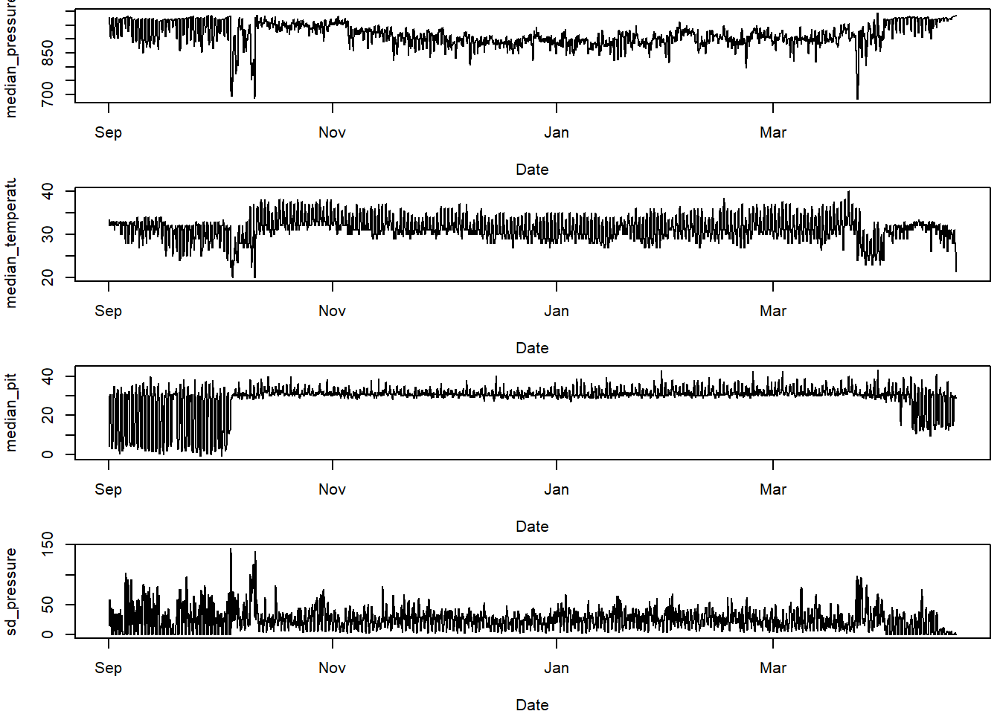

Chapter 8 Visualise data
Sensor images are a good place to start when analysing data.
par( mfrow= c(1,4), oma=c(0,2,0,6))
par(mar = c(4,2,4,2))
sensorIMG(PAM_data$acceleration$date, ploty=FALSE,
PAM_data$acceleration$act, main = "Activity",
col=c("black",viridis::cividis(90)), cex=1.2, cex.main = 2)
par(mar = c(4,2,4,2))
sensorIMG(PAM_data$acceleration$date, plotx=TRUE, ploty=FALSE, labely=FALSE,
PAM_data$acceleration$pit, main="Pitch",
col=c("black",viridis::cividis(90)), cex=1.2, cex.main = 2)
par(mar = c(4,2,4,2))
sensorIMG(PAM_data$pressure$date, plotx=TRUE, ploty=FALSE, labely=FALSE,
PAM_data$pressure$obs, main="Pressure",
col=c("black",viridis::cividis(90)), cex=1.2, cex.main = 2)
par(mar = c(4,2,4,2))
sensorIMG(PAM_data$temperature$date, labely=FALSE,
PAM_data$temperature$obs, main="Temperature",
col=c("black",viridis::cividis(90)), cex=1.2, cex.main = 2)